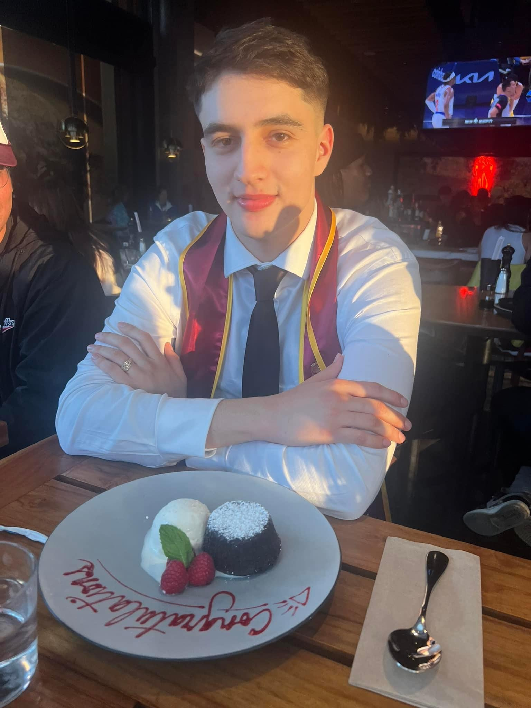

About Me
Full-Stack Developer · iOS (Swift) · Web

Introduction
Hi, I’m Fernando Romo — a full-stack software developer based in Los Angeles County. I build clean, user-focused applications across web and iOS, with a strong emphasis on performance, usability, and thoughtful design.
As a first-generation college graduate, I’m highly motivated by continuous learning and taking ownership of projects from concept to deployment.
Technical Focus
I develop full-stack applications using Java (Spring Boot), Python, and modern web technologies, and I am currently building iOS applications using Swift and SwiftUI.
My recent work involves deisgning user interfaces in SwiftUI, implementing authentication and data storage, and connecting frontends to scalable backends. I enjoy working across the entire stack — from UI and state management to APIs and databases.
Education
I earned my Bachelor of Science in Computer Science from California State University, Dominguez Hills, where I built a strong foundation in algorithms, data structures, and software engineering principles.
Work Experience
I worked as a Code Coach at theCoderSchool, where I taught students ages 6–17 programming concepts through hands-on projects.
I guided students in building games and applications using Scratch and Python, adapting lessons to different learning styles and helping them think logically and creatively when solving problems.
Hobbies
Outside of programming, I enjoy going to the gym, spending time with friends and family, and photography. Photography allows me to express creativity and attention to detail, which also influences how I design user interfaces.
Contact Information
Feel free to reach out to me at my personal email: faromo0214@gmail.com. Connect with me on my social media links down below!.

© 2026 by Fernando Romo